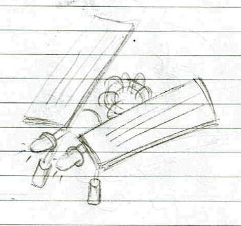
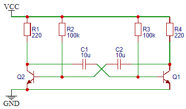
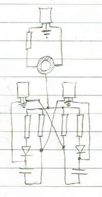
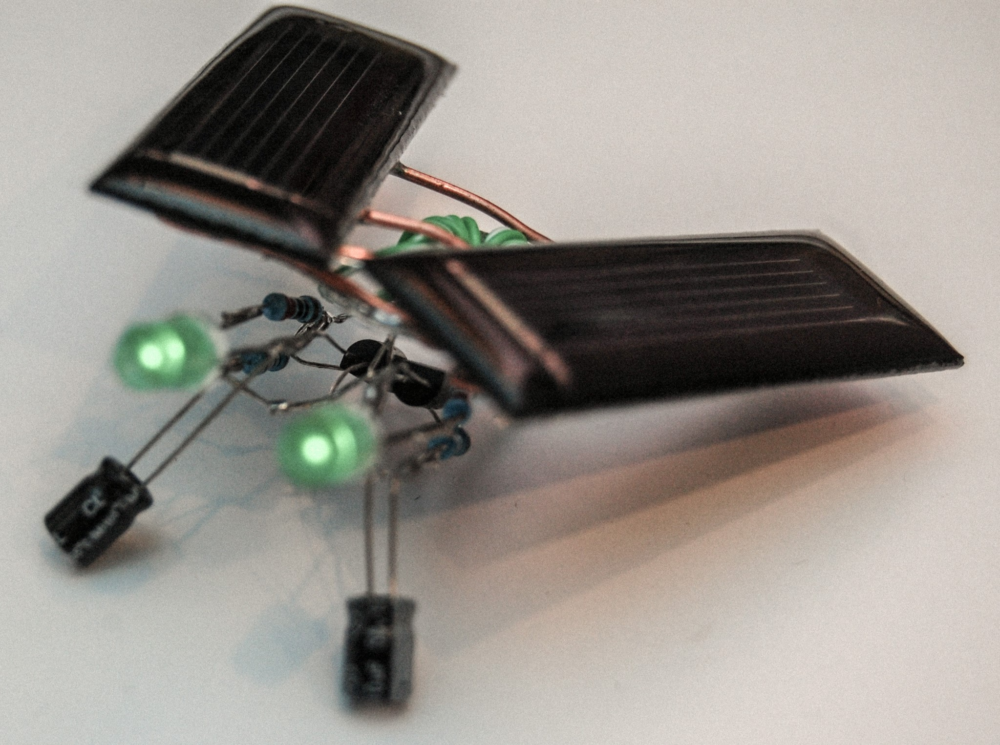
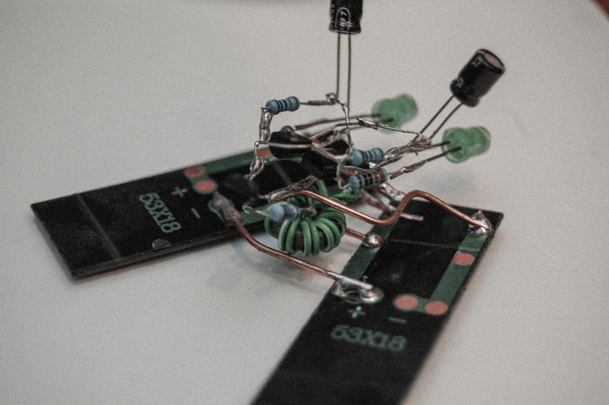

Solar Fly
Combine a two transistor astable oscilator with solar panels and a joule thief for a cyber fly that blinks when the sun shines.

Astable oscillator with only 2 NPN transistors, 2 capacitors and 4 resistors. Just steal it from the internet.

Finding a joule thief to boost the voltage of the solar panels enough to light up the LEDs is easy too. Great example on bigclive.com. Slap it to the oscillator circuit to get this. On the far left are the solar panels feeding the joule thief. Not sure if that's the right symbol.

Next was planning the layout to make it look like a bug. Again, those aren't LEDs, they're the solar panels.

The ferrite torus was scavenged from some broken electronics and the wire is from a CAT5 ethernet cable. The resistors are ⅛W.
The solar panels are rated for 0.5V. Two output a max of 1V under full sun, usualy less than that. The joule thief boosts it enough to light up the LEDs.